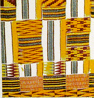

|  | Mathematicians of the African Diaspora--- http://www.math.buffalo.edu/mad/ |
| Women in Math Project--- http://darkwing.uoregon.edu/~wmnmath/ | |
| The MacTutor History of Mathematics Archives--- http://www-history.mcs.st-andrews.ac.uk/history/index.html |
Graduate School Survivor
Information ---
www.cs.umd.edu/~oleary/gradstudy/gradstudy.html
This is a 13 chapter on-line booklet on everything from finding the right graduate school in computer science and mathematics, to jobs in government and industry. The author also discusses such mundane topics as applying for graduate school, the life of a graduate student and professional ethics. |
Compare Ph.D. granting institutions ---http://graduate-school.phds.org/ |
The AMS publishes a book called Assistantships and Graduate Fellowships in the Mathematical Sciences every year.
Here are a few Fellowship Opportunities to get you started:
National Consortium for Graduate Degrees for Minorities in Engineering & Science
National Physical Science Consortium
Southern Regional Education Board
The National Academy of Sciences
The Census Bureau
Summer undergraduate research experiences
Follow the NSF link for a full list of undergraduate research programs sponsored by the National Science Foundation
Summer Undergraduate Mathematical Sciences
Research
Institute---SUMSRI
A seven-week program for minorities and women
undergraduates interested in pursuing advanced degrees in mathematics
and statistics.
Summer Program for Women in Mathematics
---SPWM
a five-week intensive program for
mathematically-talented undergraduate women who are completing their
junior year and may be contemplating graduate study in the mathematical
sciences.
Summer Mathematics Program for Women
Undergraduates
An intensive four-week mathematics program for women
finishing their sophomore year.
Summer Undergraduate Applied Mathematics
Institute
For those considering research careers in the
mathematical sciences; Diversity being sought; application available
on-line.
Mathematical and Theoretical Biology
Institute (MTBI)
A summer research program designed to encourage
undergraduates to pursue advanced degrees in math and sciences and
facilitate the access of graduate studies for Chicano, Latino, Native
American and other minority students in the sciences.
Mathematics Advanced Study Semesters ( MASS )
Note: This program is held during the fall
semester.
Research in Industrial Projects for Students (RIPS) at
Institute
for Pure and Applied Mathematics (IPAM), Los
Angeles, CA
NASA Academy
Three separate programs: Goddard Space Flight
Center,
Ames Research Center, and Dryden Flight Research Center; online
applications
available.
NASA Undergraduate Student Research Program at Glenn Research Center.
Institute for Advanced Study (Princeton)
&
Park City Math Institute
PCMI
This program brings together
women in Mathematics from the undergraduate level to the Ph.D. level to
study a different concept in mathematics every year. Support is
provided.
Finding Internships and Fellowships
Internships are often seen by employers as entry level positions. It is a way for them to check out your abilities and work habits. For any internship, be sure to find out a few things before agreeing to take the internship. Will you have to find your own housing? Will the internship pay? What will your internship entail? If it's just copying and getting coffee, look further. Remember to apply early. Many internships have November deadlines. Don't forget to ask around. Local companies often have unadvertised internships or can create them.
For internships in math and science:
The National Security
Agency
AT&T Labs
The
National Institutes of Health
NASA Glenn Research Center in Cleveland, OH, has internships for high school through PhD levels of study.
The
Bureau of Labor Statistics
Woods Hole Oceanographic Institute
AMS has a more complete list of internships. (The links on this page may be out of date, but the listing of companies is still good.)
For more general or business related internships:
InRoads, Inc. -- helps minority students find internships and corporate mentorships Vault.comThis is a good place to start. This site separates internships from regular jobs. It has several search criteria and corporate profiles.Mathematics Organizations: These organizations can help you network to find jobs, find other people with your research interests and build a mathematics community.
Young Mathematicians Network (YMN)
This is an interesting collection of new mathematicians looking for good career jobs. They meet at the annual joint math meetings. They publish a monthly journal called Concerns of Young Mathematicians that has articles about the job search process, graduate school and first faculty position articles.National Association of Mathematicians (NAM)
Looking for African American mathematicians? This is for you. NAM sponsors an undergraduate MathFest as well as Regional Faculty Conferences on Research and Teaching Excellence. Unfortunately, this site is not updated with information on upcoming events. It is a good starting point though and you can get the information on upcoming conferences by contacting the webmaster.Conference for African Americans Researchers in the Mathematical Sciences CAARMS
This conference is a great way to listen to some of the best African American mathematics researchers in business and academe.Society for Advancement of Chicanos and Native Americans in Science (SACNAS)
The mission of SACNAS is to encourage Chicano/Latino and Native American students to pursue graduate education and obtain the advanced degrees necessary for research careers and science teaching professions at all levels.American Indian Science & Engineering Society (AISES)
Nurtures building of community by bridging science and technology with traditional Native values. Through its educational programs, AISES provides opportunities for American Indians and Native Alaskans to pursue studies in science, engineering, business and other academic arenas.American Mathematical Society (AMS)
Offers MathSciNet-a guide to mathematical reviews on the web. Has a good bookstore, job search helps and more. Publishes the Journal of the AMS and Notices .Mathematics Association of America (MAA)
Sponsors SUMMA (Strengthening Underrepresented Minority Mathematics Achievement), Women and Mathematics Network and other quality professional development programs. Also sponsors Math Horizons Magazine and a bookstore.Society for Industrial and Applied Mathematics (SIAM)
Has professional opportunities listing and publishes journals in many specialized areas of mathematics.Association of Women in Mathematics (AWM)
If you are looking for professional women in mathematics and what they are doing, this is your place. Many helps for women pursuing math as a career.Institute for Operations Research and the Management Sciences (INFORMS)
Provides information about the INstitute For Operations Research and Management Science (INFORMS),Society for Mathematical Biology (SMB)
including some of the journals it puts out, conferences, etc.
Provides a forum for discussion of research in biology, mathematical-biology, and mathematics applied to or motivated by biology. Interdisciplinary research such as biophysics, computational biology, and many other similar realms are a growing part of the discussion. Links to the Bulletin of Mathematical Biology.Society of Actuaries (SOA)
If actuarial science is your thing, this is the site. Articles, conferences, books, career advice. It's all here.American Statistical Association (ASA)
For the statistician, this site has it all. Professional development, Center for Statististics Education, meetings and other helpful aid is available here.For more information about math & science organizations, see http://botw.org/top/Science/Math/Organizations/
Black
Collegian
Excellent articles for guidance as you are looking
for a graduate school or your first job. Based on the Black
Collegian magazine, it is backed with 30 years of experience.
HBCU Network
This site is new but being aggressively networked,
so it is growing. Has channels for education and careers.
Be sure to look at its networking opportunities to increase your
network.
Saludos.com
This site has a good career site with links to
companies that are hiring, profiles of those companies and others. I
hope this site is also growing.
Montage Diversity, Inc
Montage recruits and supports minority teachers for
private prep schools (mostly on the east coast). They can also
help those they recruit in finding schools that will cover tuition to
grad school, or transition into the business world.